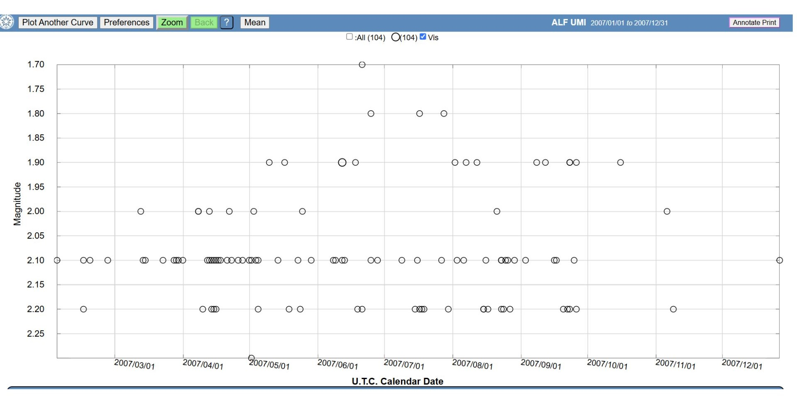
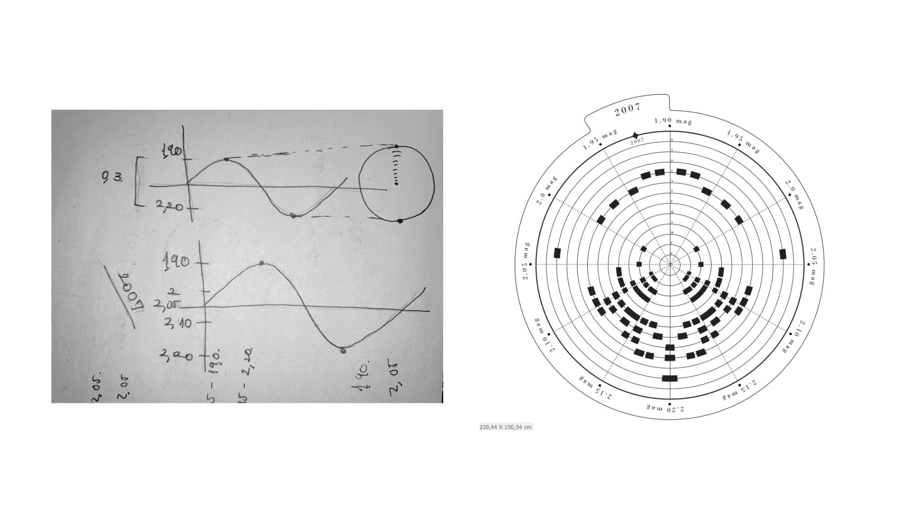
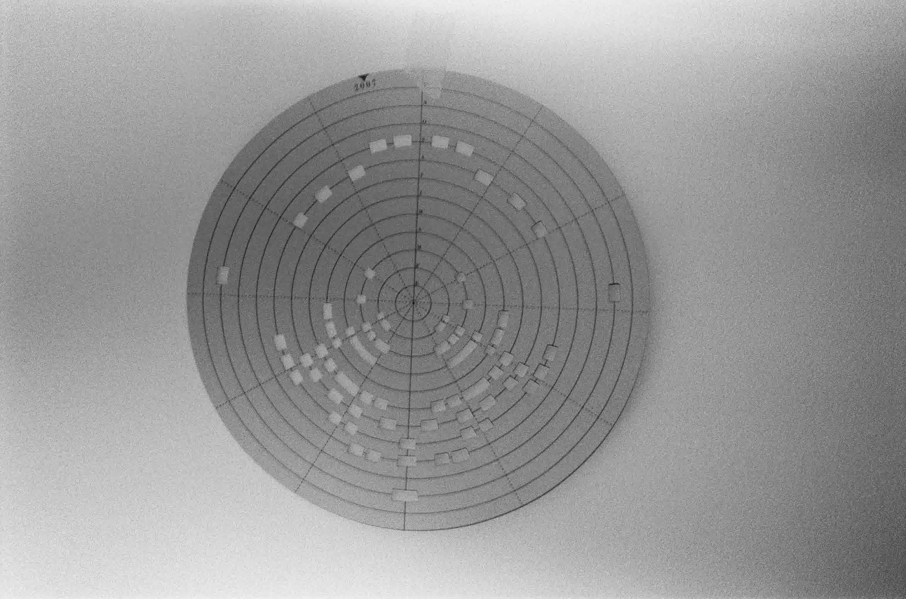
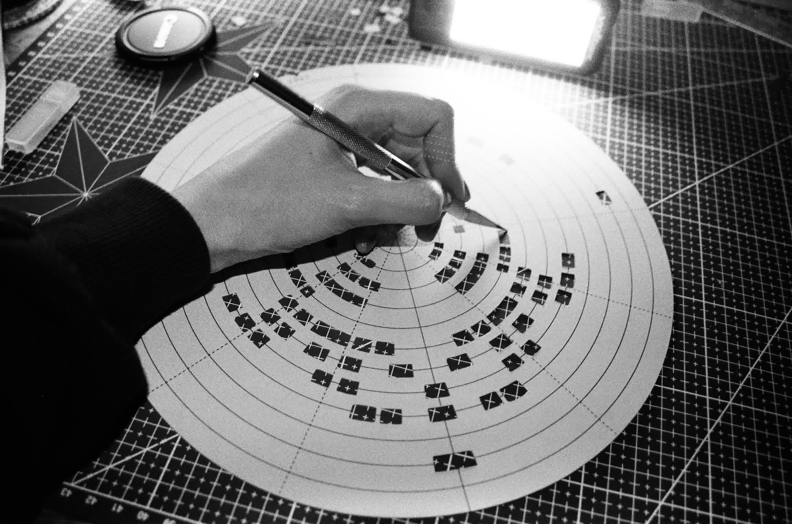
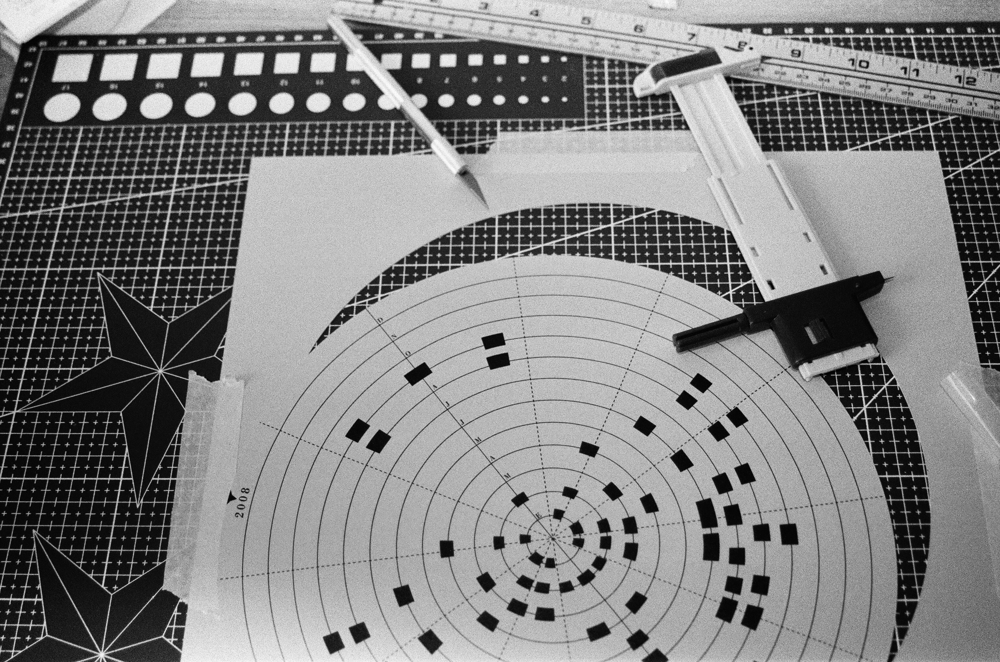
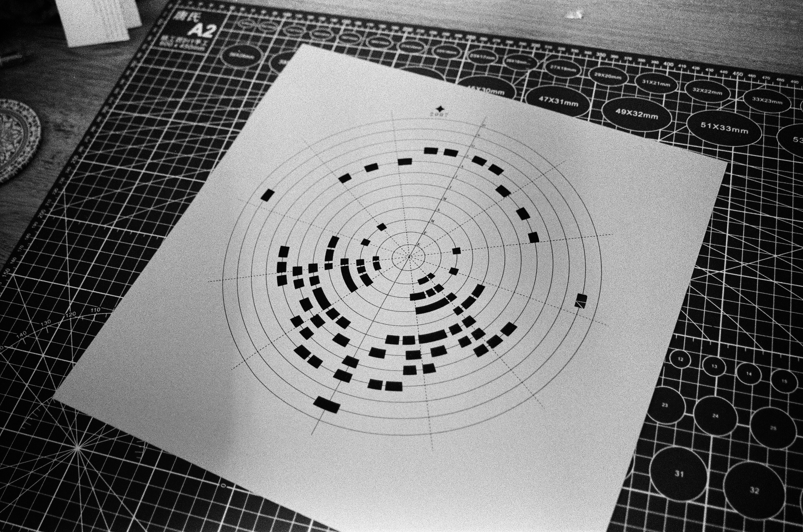
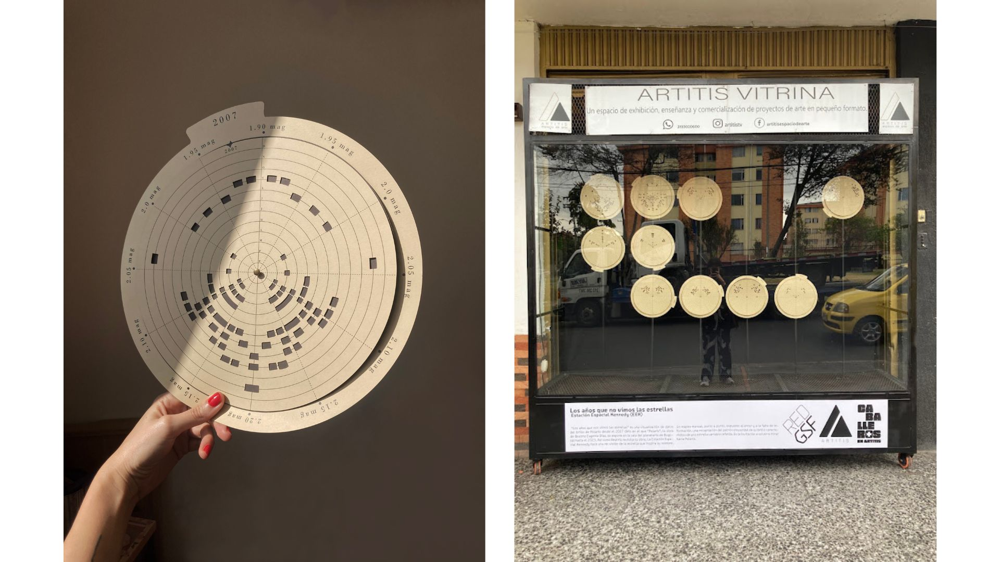

Fig. 01 · Los 10 discos · Datos de Polaris (AAVSO) · 2007–2023 · EEK-006 · 2024 Fig. 01 · The 10 discs · Polaris data (AAVSO) · 2007–2023 · EEK-006 · 2024
Esta visualización de datos intenta mostrar cómo la estrella Polaris se comportó durante los años en los que Beatriz no expuso su obra. Mientras Polaris permanecía guardada, personas alrededor del mundo estuvieron mirándola para registrar su brillo: durante los años que no vimos Polaris, muchos otros y otras sí lo hicieron.
Polaris no es una estrella fija: es una Cefeida cuyo brillo se comporta como una función seno. Esta obra toma los datos reales de su brillo — registrados por astrónomos ciudadanos de la AAVSO entre 2007 y 2023 — y los transforma en un sistema visual. Cada año es un círculo. Los anillos concéntricos son los meses, de enero en el centro hasta diciembre en el borde. Cada pulso de Polaris es un rectángulo negro sobre el papel.
Los años que no vimos las estrellas es una visualización de datos de la estrella Polaris desde 2007 hasta 2023. Es una obra que dialoga con "Polaris" de Beatriz Eugenia Díaz, obra nominada al Premio Luis Caballero, con quien compartió exhibición en Artitis (Espacio de Arte en Kennedy).
El proyecto toma los datos de brillo de Polaris recopilados por la American Association of Variable Star Observers (AAVSO) y los reinterpreta como una serie de 10 discos. Cada círculo representa un año completo: los anillos concéntricos representan los meses del año, de enero (centro) a diciembre (borde exterior), la posición alrededor del círculo indica la magnitud estelar (mag) — la medida del brillo — y los rectángulos negros marcan las observaciones en su mes y brillo correspondientes. El resultado es un sistema visual denso y preciso que contrasta con la aparente inmutabilidad de la estrella.
Las piezas fueron impresas en papel y cortadas a mano con bisturí, un proceso lento y meticuloso que responde a la misma paciencia con la que los astrónomos ciudadanos registraron los datos originales. Los 10 discos se exhibieron en la vitrina de Artitis, un espacio de exhibición de arte en pequeño formato ubicado en Kennedy, Bogotá.
This data visualization attempts to show how the star Polaris behaved during the years when Beatriz did not exhibit her work. While Polaris remained hidden, people around the world were watching it to record its brightness: during the years we did not see Polaris, many others did.
Polaris is not a fixed star: it is a Cepheid whose brightness behaves like a sine function. This work takes the real data of its brightness — recorded by citizen astronomers of the AAVSO between 2007 and 2023 — and transforms it into a visual system. Each year is a circle. The concentric rings are the months, from January in the center to December at the edge. Each pulse of Polaris is a black rectangle on paper.
The Years We Didn't See the Stars is a data visualization of the star Polaris from 2007 to 2023. It is a work that dialogues with "Polaris" by Beatriz Eugenia Díaz, nominated for the Luis Caballero Award, with whom it shared exhibition at Artitis (Art Space in Kennedy).
The project takes the brightness data of Polaris collected by the American Association of Variable Star Observers (AAVSO) and reinterprets it as a series of 10 discs. Each circle represents a full year: the concentric rings represent the months of the year, from January (center) to December (outer edge), the position around the circle indicates stellar magnitude (mag) — the measure of brightness — and the black rectangles mark the observations at their corresponding month and brightness. The result is a dense and precise visual system that contrasts with the apparent immutability of the star.
The pieces were printed on paper and cut by hand with a scalpel, a slow and meticulous process that responds to the same patience with which citizen astronomers recorded the original data. The 10 discs were exhibited in the Artitis showcase, a small-format art exhibition space located in Kennedy, Bogotá.
Los datos fueron tomados de la American Association of Variable Star Observers (AAVSO), una organización de astrónomos ciudadanos que registran observaciones de estrellas variables desde 1911. Se descargaron las mediciones de magnitud visual de Polaris (ALF UMI) desde 2007 hasta 2023. Cada punto de datos representa una observación: fecha, magnitud aparente, y código del observador.

Fig. 05 · Datos AAVSO · Magnitud visual de Polaris (ALF UMI) · 2007
A partir de los datos lineales de la AAVSO (magnitud vs. tiempo), se realizó un proceso de reinterpretación completamente manual. Con papel y lápiz se dibujaron croquis de las curvas de luz de Polaris, explorando diferentes formas de representar la variación del brillo a lo largo del tiempo.
El sistema visual final funciona así: cada año es un círculo completo. Los anillos concéntricos representan los meses del año, de enero (el círculo más pequeño, en el centro) hasta diciembre (el círculo más grande, en el borde exterior). La posición alrededor del círculo indica la magnitud estelar (mag) — la medida del brillo: valores más cercanos a ~1.90 mag significan que Polaris brillaba más, y valores más cercanos a ~2.20 mag significan que brillaba menos. Los rectángulos negros marcan las observaciones: su anillo dice en qué mes, y su posición angular dice qué tan brillante era.
La clave del remapeo está en la naturaleza de Polaris: al ser una Cefeida, su brillo varía de forma periódica siguiendo una función seno. Esa regularidad cíclica permitió traducir la curva de luz lineal (brillo vs. tiempo) a un sistema circular donde cada mes ocupa un anillo concéntrico. El seno del brillo se convirtió en el radio del círculo; el tiempo, en el ángulo.
Una vez definido el sistema, se trazaron las guías concéntricas y los ejes radiales en formato digital para imprimir. Los sectores negros se definieron manualmente según la concentración de observaciones. El resultado es un sistema de 10 discos, uno por cada año del período 2007–2023.

Fig. 06 · Croquis manuales de curvas de luz · Gráfico polar final · 230,44 × 150,54 cm
Los gráficos se imprimen en papel couché de alta densidad. Cada círculo se corta a mano con bisturí de precisión sobre base de corte, siguiendo las líneas concéntricas y los sectores radiales. El corte manual introduce pequeñas imperfecciones que contrastan con la precisión matemática de los datos, creando una tensión entre lo digital y lo analógico. El proceso toma aproximadamente 2 horas por pieza.




Fig. 07–10 · Impresión en papel couché · Corte manual con bisturí · Detalle · Pieza terminada
Los 10 discos se exhiben juntos en la vitrina de Artitis, un espacio de exhibición de arte en pequeño formato ubicado en Kennedy, Bogotá. Cada disco representa un año de pulsaciones de Polaris. Juntos, los 10 discos forman un sistema visual que abarca 16 años de observaciones — los años en que, desde la Tierra, registramos el brillo de una estrella que parece no cambiar pero que, en realidad, nunca deja de hacerlo.

Fig. 09 · Disco final · Vitrina Artitis · Espacio de Arte en Kennedy · Bogotá
↗ Repositorio técnico completoComplete technical repositoryThe data was taken from the American Association of Variable Star Observers (AAVSO), an organization of citizen astronomers that records observations of variable stars since 1911. Visual magnitude measurements of Polaris (ALF UMI) from 2007 to 2023 were downloaded. Each data point represents an observation: date, apparent magnitude, and observer code.
Fig. 05 · AAVSO data · Visual magnitude of Polaris (ALF UMI) · 2007
From the AAVSO linear data (magnitude vs. time), a completely manual reinterpretation process was carried out. With paper and pencil, light curve sketches of Polaris were drawn, exploring different ways to represent the variation of brightness over time.
The final visual system works like this: each year is a complete circle. The concentric rings represent the months of the year, from January (the smallest circle, in the center) to December (the largest circle, at the outer edge). The position around the circle indicates stellar magnitude (mag) — the measure of brightness: values closer to ~1.90 mag mean Polaris shone brighter, and values closer to ~2.20 mag mean it shone less. The black rectangles mark the observations: their ring says in which month, and their angular position says how bright it was.
The key to the remapping lies in the nature of Polaris: being a Cepheid, its brightness varies periodically following a sine function. That cyclic regularity allowed translating the linear light curve (brightness vs. time) into a circular system where each month occupies a concentric ring. The sine of the brightness became the radius of the circle; time, the angle.
Once the system was defined, concentric guides and radial axes were traced in digital format for printing. The black sectors were defined manually according to the concentration of observations. The result is a system of 10 discs, one for each year of the period 2007–2023.
Fig. 06 · Manual light curve sketches · Final polar chart · 230,44 × 150,54 cm
The graphics are printed on high-density coated paper. Each circle is cut by hand with a precision scalpel on a cutting mat, following the concentric lines and radial sectors. The manual cutting introduces small imperfections that contrast with the mathematical precision of the data, creating a tension between the digital and the analog. The process takes approximately 2 hours per piece.
Fig. 07–10 · Printing on coated paper · Manual cutting with scalpel · Detail · Finished piece
The 10 discs are exhibited together in the Artitis showcase, a small-format art exhibition space located in Kennedy, Bogotá. Each disc represents a year of Polaris pulsations. Together, the 10 discs form a visual system spanning 16 years of observations — the years in which, from Earth, we recorded the brightness of a star that seems not to change but that, in reality, never stops doing so.
Fig. 09 · Final disc · Artitis showcase · Art Space in Kennedy · Bogotá
↗ Complete technical repository